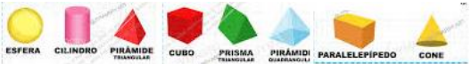
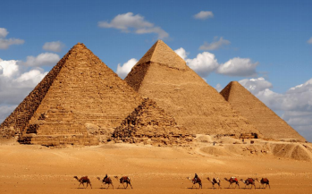
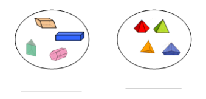
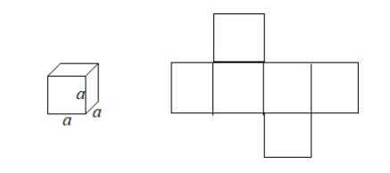
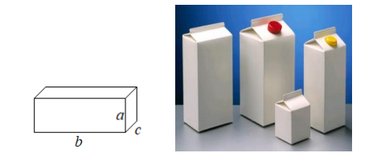
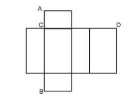
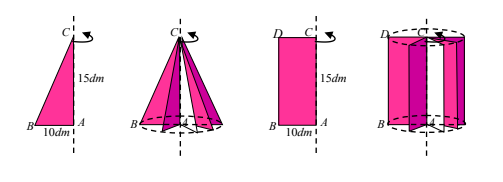
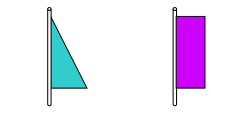

Capítulo 2
GEOMETRIA ESPACIAL NO CONTEXO DA INDÚSTRIA DA CONSTRUÇÃO CIVIL
No atual cenário da construção civil o que é evidente é a beleza encontrada no formato das obras e, a cada dia, se vem percebendo o uso da geometria, o que as torna verdadeiras obras de arte. É muito comum encontrar caixas d’água apresentadas na forma cilíndrica, telhados na forma de pirâmides e muitos acabamentos de casas com uso de formas geométricas, que além de estética pode-se aproveitar melhor o espaço do terreno. Com esse olhar, há necessidade de conhecer a geometria, fazendo uso dos sólidos geométricos na aplicação das atividades feitas em obras. O contexto da construção civil utiliza-se da geometria, dando sentido e possibilitando a sua compreensão. Alguns sólidos geométricos, por exemplo, são facilmente observados no formato dos prédios e na configuração dos diferentes espaços das grandes cidades e facilitam o entendimento de diversas formas geométricas. Adaptado de: Matemática Na Construção Civil: Geometria e o Conhecimento Dos Pedreiros No Município de Posse de Santos, Fernanda A. e Souza: Paulo F.
POLIEDROS E CORPOS REDONDOS: QUAL A DIFERENÇA?Caro aluno! Os sólidos geométricos estão presentes no nosso dia a dia, no formato dos objetos que nos cercam, nas construções, na arte, etc. Explorar os sólidos, classificá-los, nomeá-los, identificar suas medidas e suas propriedades nos possibilita conhecimentos para compreender melhor a realidade e o mundo do trabalho. Nesse capítulo, você explorar alguns sólidos.
(RE)CONSTRUINDO CONHECIMENTOSVamos fazer uma atividade prática com o objetivo de explorar diferentes sólidos geométricos, classificando-os em poliedros e corpos redondos.
Acesse o vídeo clicando no link a seguir:
Os corpos redondos são os que rolam quando colocados em uma rampa e os que deslizam são chamados poliedros. Os poliedros têm faces arestas e vértices e suas faces são polígonos.
Acesse o vídeo clicando no link a seguir:
Observe os sólidos nomeados a seguir e leia seus nomes.
Agora, preencha a tabela com os nomes dos sólidos e verificando se eles rolam ou não rolam. Na terceira coluna diga se o sólido é um poliedro ou um corpo redondo
| Nome | Prisma ou Corpo Redondo |
| - | - |
Leia o texto a seguir:
 PIRÂMIDES: FORMAS GEOMÉTRICAS QUE ENCANTAM O HOMEMAo longo da História da Humanidade, as pirâmides foram utilizadas como símbolos de grandeza, de poderio, de misticismo, em manifestações artísticas por sua beleza, perfeição e sua solidez. A primeira imagem que nos vem à mente quando falamos em pirâmides é a das pirâmides do Egito, especialmente as de Quéfren, Quéops e Miquerinos. Foram erguidas numa época em que a civilização não contava com equipamentos sofisticados de transporte e medição. Para construir a pirâmide de Quéops, considerada a Grande Pirâmide, de 2500 a.C., foram utilizados mais de dois milhões de blocos de rochas, pesando mais de duas toneladas cada um. Platão (427 a.C. - 347 a.C.) utilizou o tetraedro, uma pirâmide regular cujas faces são quatro triângulos equiláteros, um dos cinco sólidos regulares, chamados Platônicos para representar o fogo, para ele, um dos elementos existenciais. No Museu do Louvre, em Paris, com uma forma futurista, em 1988, foi inaugurada uma outra pirâmide. Na época de sua construção, houve uma grande discussão quanto ao seu estilo, considerando o choque entre o contemporâneo e o clássico, pois seu projeto contrastava com o estilo clássico desse museu. No entanto, para muitos, é, justamente, esse contraste que dá ao 13 lugar um aspecto todo especial e que deslumbra seus visitantes. Essa grande pirâmide de vidro e metal, medindo 20,6 metros de altura, de base quadrangular de 35 metros de lado, possui 603 losangos e 70 triângulo de vidro. O tetraedro regular com os outros polígonos regulares perpetua a obra de Platão, as pirâmides do Egito são monumentos funerários construídos para eternizar os reis, a pirâmide de vidro do Louvre é um objeto de arte, que embeleza a entrada do Museu, onde estão grandes obra da humanidade. Ao longo da História e na atualidade, as pirâmides fascinam e encantam o homem. Você leu o texto Nas figuras a seguir, Pirâmides: formas geométricas que encantam o homem. Então, nomeie os conjuntos as seguir com as palavras: prismas pirâmides
Observando os prismas você observa que eles duas faces paralelas. Nesse capítulo, você vai estudar mais detalhadamente, o cubo, o paralelepípedo, calculando o volume planificando-os e a área da base, e a área total.
O CUBO E SUAS APLICAÇÕES
O cubo tem seis faces quadrangulares congruentes, o que você percebe quando observa a sua planificação.
Suas 12 arestas que denominamos com a letra a, também são congruentes.
Para calcular a área da base de um cubo, considere um quadrado de lado a e calcule a área pelo produto dos lados do quadrado. A = a x a, A = a2 Para calcular a área total que é a soma das áreas dos seis quadrados, basta multiplicar por seis a área da base do cubo. Área total = 6. a2 O volume é calculado pelo produto das três arestas que representam as três dimensões V = a x a x a = a3 Veja um problema que envolve cubo. A caixa d’água em um prédio tem a forma de um cubo de 3m de aresta. Qual o volume da caixa? Toda a caixa inclusive a sua tampa será revestida por uma película impermeável. Quantos metros de película deverão ser comprados? O volume da caixa será V = 3m x 3m x 3m = 27m3 . Para comprar a película impermeável é preciso calculara a área total da caixa. Sabe-se que a área total é 6 vezes a área da base: 6.3m x3 m = 54m2 . Serão necessários, no mínimo 26m2 do revestimento para impermeabilizar a caixa d’água.
O PARALELEPÍPEDO E SUAS APLICAÇÕESSe você observar o mundo ao seu redor, você poderá verificar que o paralelepípedo é uma forma muito utilizada. Desde o formato de edifícios, caixas desde caixas muito grandes de embalagens de uma geladeira como caixas pequenas para a embalagem de remédios por exemplo. O paralelepípedo é também chamado de bloco retangular é um prisma que tem 6 faces retangulares congruentes duas a duas.
O paralelepípedo tem 12 arestas congruente 4 a 4 pois 4 medem a, 4 medem b e 4 medem c
Para calcular o volume do paralelepípedo, multiplicam-se as suas três dimensões.
Para calcular a área total de um paralelepípedo, é interessante observe a sua planificação O paralelepípedo tem seis faces retangulares congruentes duas a duas. Duas de dimensões a x b, duas de dimensões a x c e duas de dimensões b x c. Para calcular a área total do paralelepípedo calcula-se a soma das áreas dos seis retângulos da seguinte forma: Área total = 2ab + 2 a c + 2 b c. Veja um problema que envolve cubo. Uma caixa será embrulhada com um papel de presentes, sendo que o papel deve recobrir totalmente cada face pelo menos uma vez. Se a caixa possui 60 cm de comprimento, 25 cm de largura e 30 cm de comprimento, qual a menor área possível para o papel de presentes? Para resolver esses problema precisamos calcular área total da caixa.
AT=2(ab+bc+ac)
AT=2(60⋅25+25⋅30+60⋅30)
AT =2(1500+750+1800)
AT =2⋅4050
AT =8100 cm2
A menor área é 8100cm2
VOCÊ SABIA?Os cones, os cilindros e as esferas, os sólidos que rolam são chamados corpos redondos ou sólidos e revolução. Os cones e os cilindros por exemplo, são obtidos fazendo girar um triângulo retângulo ou um retângulo em torno de um de seus lados. A formação de um cone ou de um cilindro retos pode ser imaginada a partir de um triângulo retângulo ou de um retângulo, em movimento de rotação em volta de um de seus catetos (eixo de rotação). Por isso são chamados de cone de revolução e cilindro de revolução.
Você pode criar um cone ou um cilindro, recortando cartões, um na forma de triângulo retângulo e outro na forma de um retângulo. Em um dos catetos do triângulo e em um dos lados do retângulo, cole um espetinho como mostram as figuras abaixo:
Então, faça girar as pontas dos espetinhos, um de cada vez, imaginando que figuras ficarão formadas e você vai descrever um cone e um cilindro.
1) Para aplicar seus conhecimentos sobre o paralelepípedo, pegue uma caixa na forma de paralelepípedo, cujas faces sejam retângulos congruentes e paralelos 2 a 2. Meça com uma régua as três arestas diferentes que serão as dimensões a, b e c.
Desmanche a caixa, recortando as abas de colagem. C A A B B C 15dm 10dm B A C C A B 15dm 10dm D D 17 Faça o desenho da planificação e calcule a área total da caixa como você aprendeu: a área total do paralelepípedo é soma das áreas dos seis retângulos da seguinte forma: Área total = 2ab + 2 a c + 2 b c. Você pode, também calcular o volume da caixa, que você também aprendeu. Multiplique as três dimensões pois o volume de uma paralelepípedo é V = a.b.c.
2) Para verificar como a forma do paralelepípedo é muito utilizada no mundo físico, observe os objetos da sua casa, as diferentes embalagens, o formato dos edifícios e você vai se admirar.
3) Um reservatório em forma de paralelepípedo tem 4m de comprimento, 3m de largura e 1,5m de altura. Determine a capacidade em m3 desse reservatório. Lembre que em 1m3 equivale a 1000 litros.
4) Calcule o volume de um cubo, sabendo que a medida de seu lado é igual a 12cm.
O QUE APRENDI
Nesse capítulo, aprendi a reconhecer os sólidos geométricos e classificá-los em poliedros e sólidos de revolução. Aprendi que os sólidos têm três dimensões e, por isso, pode-se calcular o seu volume, multiplicando-as. Como as suas faces são polígonos que são figuras geométricas planas, aprendi, também, a calcular a área da base e a área total de cubos e paralelepípedos. Com uma atividade prática entendi porque os sólidos que rolam, os cilindros e as pirâmides, são chamados sólidos de revolução. Entendi que conhecer geometria é importante para exercer várias profissões.
3) 18 m3 ou 18.000 litros
4) Vc = 1728 cm3